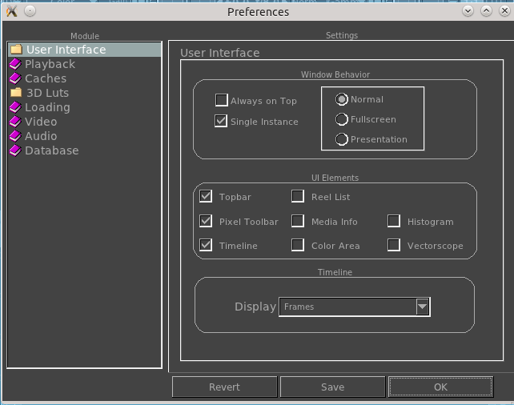

The User Interface Preferences allow you to configure how the mrViewer's interface and main window looks once mrViewer is started.
|  | allows you to make
the mrViewer's window appear always on
top of all other application windows. This can be useful when
using mrViewer as a render viewer.
,
, and
allows you to switch
how mrViewer
starts. Fullscreen will try to maximize the window of
mrViewer to cover your screen space. Presentation mode is
like Fullscreen but will remove all windows and toolbars.
Normal mode sizes the window of mrViewer based on the first
image or movie file loaded (and its pixel ratio).
This section allows
you
to toggle which portions of mrViewer
appear as soon as mrViewer is opened.
This section allows
you
to toggle how the timeline displays the time. It can be in frames, seconds, time, Drop Timecode, Non-Drop Timecode.
|